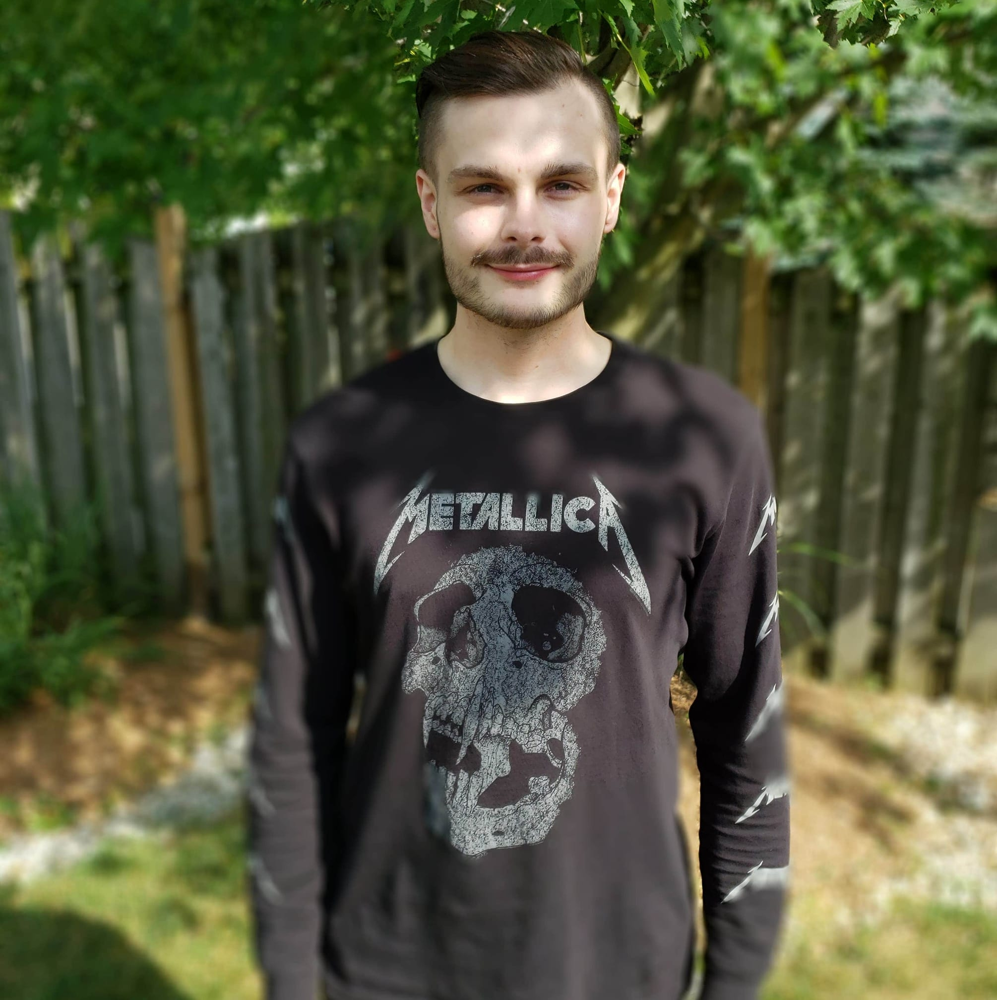

1
Hi my name is Braiden and I originally started my programming journey on my own. I first attempted to learn C++ and quickly realized that C++ was going to be too challenging at the time so I migrated to learning the programming language "Python”. I started off with YouTube videos and then I found platforms such as: SoloLearn, Udemy, and CodeCademy. After some time with using these platforms I decided to try to learn the MVT framework for Python called Django I struggled to learn the framework but I learned how to.
- Create custom models
- Class based views
- Configure URLs
- Login
- OAuth2 Google
- Registration
- Customizing admin interface
- Configure postgres DB
- Change password hasher
- Password reset system (with expiring token)
- Static/media file uploads
Plus more
3

Today I have put in a lot of work I have been actively uploading code to GitHub you can check out all of the code here Braiden Gole's GitHub Profile. I have source code written in C, C++, C#, Python, CPython, Html, Css, Javascript. The content of the code is mainly the implementation of algorithms and fun projects and is constantly being updated with new code.
All of the code is written behind a Alienware M15 Windows 10 PC.

2
Software Engineering Technology (SET) After programming by myself for a while I decided to take things to the next level by signing up for the Software Engineering Technology program at Conestoga College. I had a great experience in the program I got to learn the C programming language, C++, Batch, operating system fundamentals, user interface/user experience, DFD(Data Flow Diagrams), Data structures, SRS Fundamentals, UML Diagrams and more.
Computer Programming and Analysis (CPA) Things were a little too challenging in Software Engineering so I switched to the Computer Programming and Analysis program at Conestoga College. This change has been beneficial because I got to collaborate with new people, technologies, and most importantly gave myself an oppertunity to continue as a developer. I am really enjoying the program it is a lot of fun and more focused on Web, Mobile, and Desktop development. This program has many similarities, a partial difference between the two programs is that CPA will have a stronger focus on the design and layout and presentation of a project.